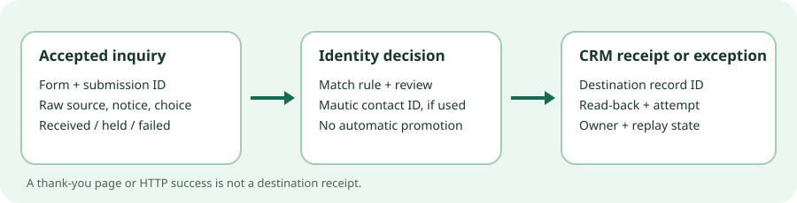

Form-to-contact handoff · 17 Oct 2026 · source audit
Can every accepted form inquiry be found in the CRM?
Keep the existing landing-page form and CRM route if it can account for each accepted inquiry with a submission ID, a destination CRM ID, source and contact-preference evidence, and a visible exception that someone can repair. Trial Mautic Community 7.2.1 only if a separate self-hosted marketing-contact layer is needed and the team can reconcile its form submission and contact IDs to the CRM record. No CRM receipt was observed in this audit.

First route: inspect the existing form and CRM
The current provider and implementation are unknown. Assign or use a durable event ID when the receiving server accepts an inquiry; retain a submission ledger before attempting a CRM change. Record the actual destination ID, mapped fields, response and exception. Reconcile accepted event IDs to CRM IDs and held/failed rows at a cadence that matches response obligations. If the current form already exports immutable submission IDs and failure logs, use those rather than building a second store. If it only emails an inbox or shows a success screen, the handoff gap remains. Changing to Mautic alone does not close it.
Inspect the current validation and anti-bot controls, retention, duplicate/upsert rules, field mappings, access/export rights, retry queue and dead-letter route. Preserve a missing-source state; a UTM parameter is an untrusted attribution clue, not proof of what a person saw or authorized. This existing route was not tested here.
A compact record to reconcile
| Record | Keep it separate from | Reason |
|---|---|---|
| Form ID, submission ID, schema version, accepted-at UTC | Email address | One person may inquire twice; the event needs its own stable key. |
| Raw email, normalized match key and matching decision | Verified identity | Shared inboxes, changed addresses and conflicts need review. |
| Submitted fields, exact notice/version, preference choice and capture time | A later subscribed flag | A target status cannot reconstruct what was shown or stated. |
| Landing URL, available UTM values, capture time and trust class | Contact-level attribution | URL parameters can be missing or edited; later updates can blur event provenance. |
| Mautic contact ID if used; CRM object type and ID; idempotency key | HTTP response or thank-you screen | Item-level read-back reveals missing or duplicate destination records. |
| Received, validated, held, handed off, acknowledged, failed, repaired; time and owner | A single success count | An exception must remain visible and safely replayable. |
This is an operator-designed contract, not a claim that either product supplies all fields by default. A reply to an inquiry is separate from promotional eligibility. Do not add a contact to a promotional segment merely because a form was submitted; retain unknown, blank and declined states for review.
What Mautic 7.2 documentation supports
The 7.2.1 release was published on 23 September 2026 and the tagged package metadata declares the core project GPL-3.0. The releases page calls 7.2 active and 7.2.1 latest, but its schedule ends 7.2 support on 30 September 2026 and lists 7.3 as LTS. That conflict prevents a current-support claim; ask maintainers and inspect a pinned artifact before production selection. The living installation guide mixes older version examples with 7.2 text and is not an exact 7.2.1 compatibility matrix.
Forms documentation describes required fields, basic CAPTCHA/honeypot, field-to-contact mapping and each field's Save result switch. Turning Save result off omits that field from the submissions table even if mapping can update the contact. An unmapped field does not populate the contact. Email can match an existing contact; contact guidance also notes other matching inputs and possible duplicates. Kiosk mode creates a new contact for each submission and is not a default for repeat inquiries. None of this proves a specific installed row's merge or field-conflict outcome.
The Forms REST API documents a submissions list and a single-submission endpoint. Its example includes submission ID, date, referer, form, associated contact ID and submitted results. An authorized polling adapter could use form ID plus submission ID as an event key, then store the destination CRM ID and errors separately. This is custom operator work, not a built-in CRM receipt. The docs do not establish that the browser success page exposes the ID or that every field was saved under a particular configuration.
The forms guide describes Record UTM Tags; UTM guidance reads landing URL parameters with referrer fallback. It does not authenticate campaign attribution. Store raw event source as well as any contact-level value. Save the exact preference/notice evidence separately and hold promotional eligibility pending review. Deliberately omit the documented Remove Contact from Do Not Contact list action: a new inquiry does not justify clearing an earlier opt-out.
The unproven CRM edge
The forms guide documents POST results to another Form with field aliases and error email, and Push Contact to Integration for a configured plugin; the API action table names form.repost and plugin.leadpush. Those descriptions do not prove that a chosen CRM accepts all fields exactly once, returns a durable ID, retries safely after timeout or exposes a repairable failure. No CRM or plugin was specified, so none was certified. A notification email is not a dead-letter queue.
For a controlled trial, an operator could poll documented submission IDs, validate schema and preference state, upsert into a test CRM or inert receiver under a stable external key, and store request attempts, response, destination ID and read-back result. A generic form POST should remain a separate experiment until its error and replay behavior is demonstrated. No send, campaign or DNC-removal action belongs in this capture trial.
Three transitions to test before replacement
- Repeat the same normalized email with a changed preference. Require two event IDs, review one-contact/two-event matching, and confirm an earlier opt-out is not automatically removed.
- Submit missing or altered UTM values. Preserve the raw URL and mark source unknown rather than inventing a campaign.
- Make the destination time out after local acceptance. Require a visible failed/held item, then replay with the same external key and read back the CRM record to check for a duplicate.
Use an exact pinned, non-production build and fictional .invalid addresses. Keep emails, campaigns, production CRM credentials, public webhooks and unattended workers disabled. Compare every accepted submission to a destination ID or owned exception, not just aggregate counts. Test role-scoped export, bot rejection, backup restore and reversal before any live replacement. The roles guide describes scoped exports and permissions; the update guide calls for files-and-database backups. Neither establishes a working deployment or restore here.
Decision and limits
Keep the existing route if it can supply the event-to-CRM receipt and exception record with less change. Trial Mautic only if a separate operated contact layer is useful and the team can build or verify the ledgered CRM edge. Postpone replacement if accepted inquiries cannot be accounted for, or if permission, mapping, support status or recovery is unresolved. A successful form response is not a CRM receipt.
Independent field-mapping, duplicate-contact and lead-routing questions show this operator problem exists in other stacks. They are anecdotes, not a prevalence estimate or evidence that Mautic solves it. The exact 7.2.1 form behavior, preference conflicts, bot efficacy, connector acknowledgments, retry semantics, CRM mapping, restore, legal sufficiency, conversion effect and operating cost remain untested.